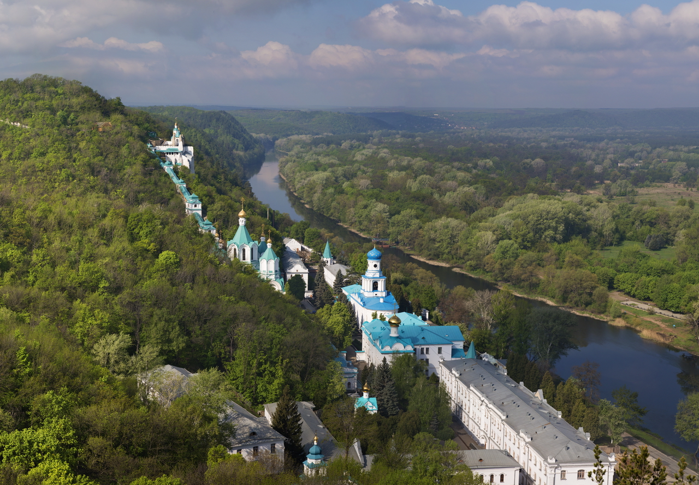
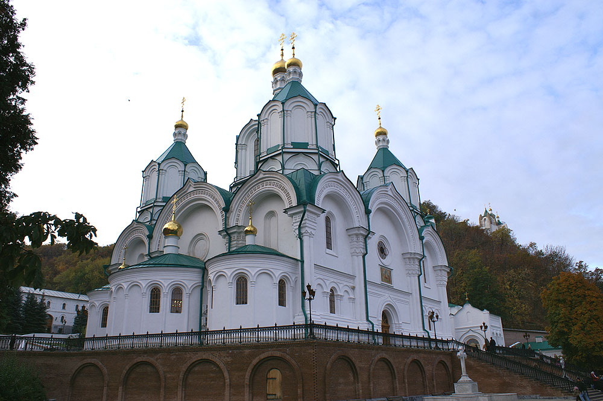

Slide Down Menu
Киево-Печерская лавра
Почаевско-Успенская лавра
Успенская Святогорская лавра
собор Успения Пресвятой Богородицы
церковь Покрова Пресвятой Богородицы
церковь святителя Николая Чудотворца
пещерный храм
Рождества Иоанна Предтечи
часовни
апостола Андрея Первозванного
преподобных Арсения и Германа
преподобных отцов Киево-Печерских
надкладезная
преподобного Алексия, человека Божия
преподобных Антония и Феодосия Печерских
Carousel


‹
›
Random
Select
Выберите цель посещения
Лавра
Монастырь
Храм
Часовня
Скит
Checkbox
Молебен
Сорокоуст
Литургия
Молебен (css)
Сорокоуст (css)
Литургия (css)